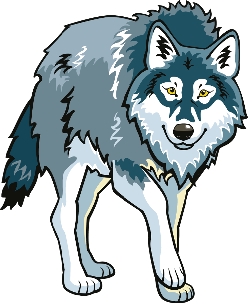
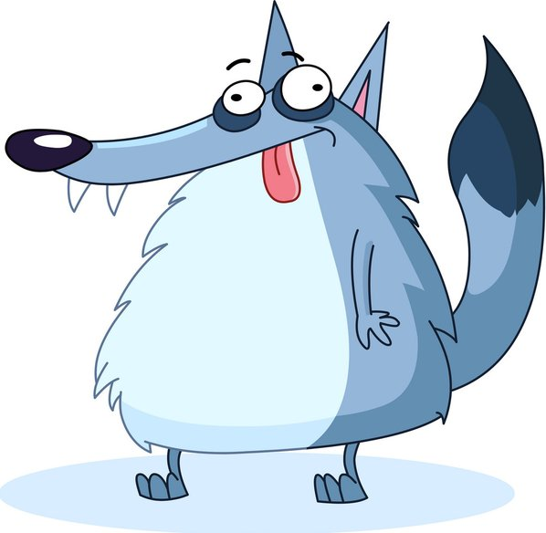
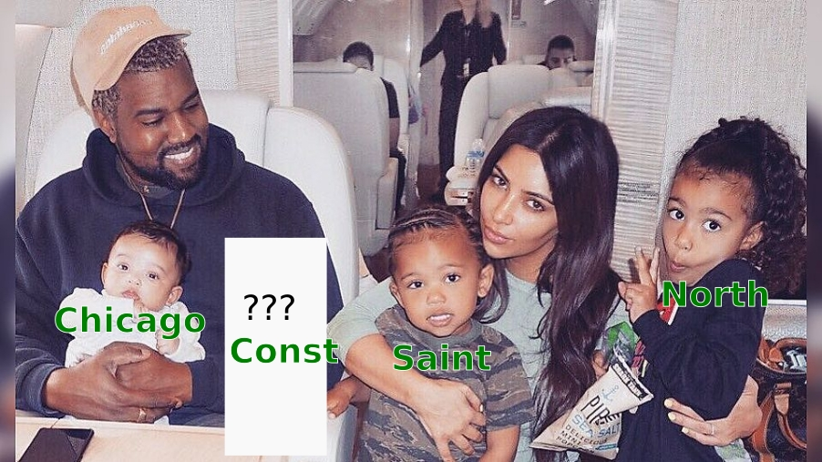

The Bad Big Woolf Meets Riding Hood Little Red
Something's amiss

"Riding Hood Little Red" is obviously wrong
Elephant purple
English has prepositive adjectives.
Many other languages don't. Notably the romance languages.
Little Red Riding Hood Purple elephant
Caperucita Roja éléphant violet
Postpositive in English?
- Archaic or poetic: The sound of ghosts unseen
- Borrowed phrases: heir apparent, terra incognita
Bad Big Wolf?
Bad Big Wolf?
Humans prefer a certain order of adjectives
GSSSACPM
- general opinion or quality
- specific opinion or quality
- size
- shape
- age
- color
- origin
- material
A big brown wooden spoon
A wooden brown big spoon? A brown big wooden spoon?...
Exceptions to GSSSACPM
Specificity
Idioms: last straw
Idiom-like: big spender
Big evil man
...evil big spender
Interlude
Prepare your tomatoes
C++?
int
unsigned int
const int
const int
vs
int const
const int
vs
int const
English is the lingua franca of software engineering
Ironic, since lingua franca means "French language" in ItalianProgramming languages are made for human beings
...stillint- noununsigned int- idiom-like phraseconst int- correct Englishint const- incomprehensible gibberish
No, int is not an andjective and const is not a noun
Const West?
Fin
#westconst